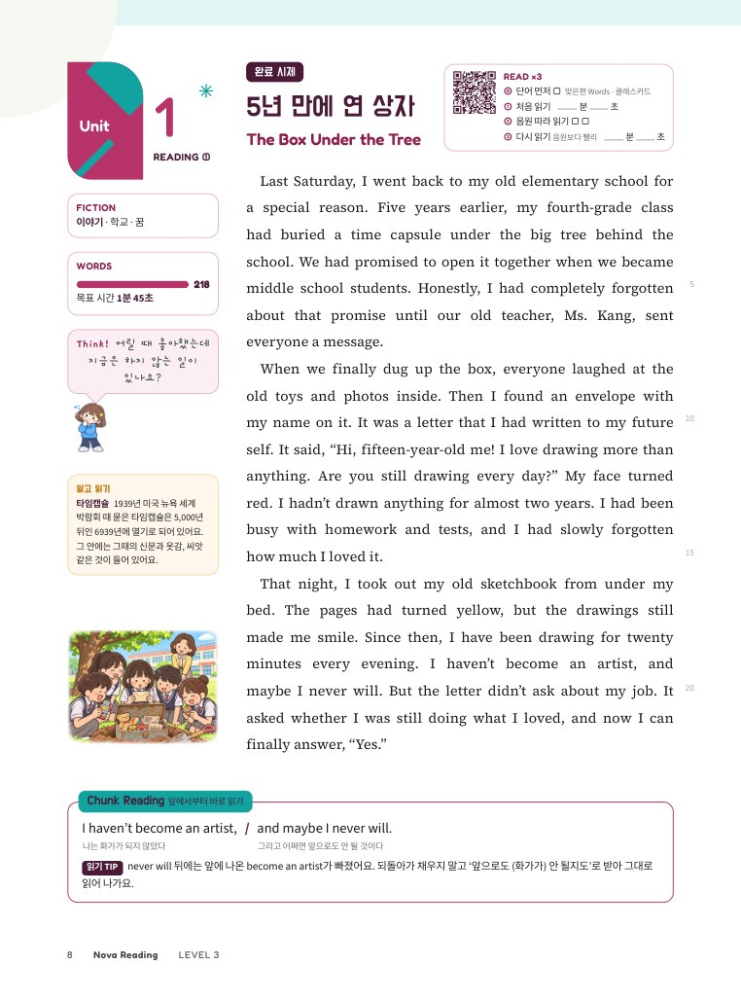
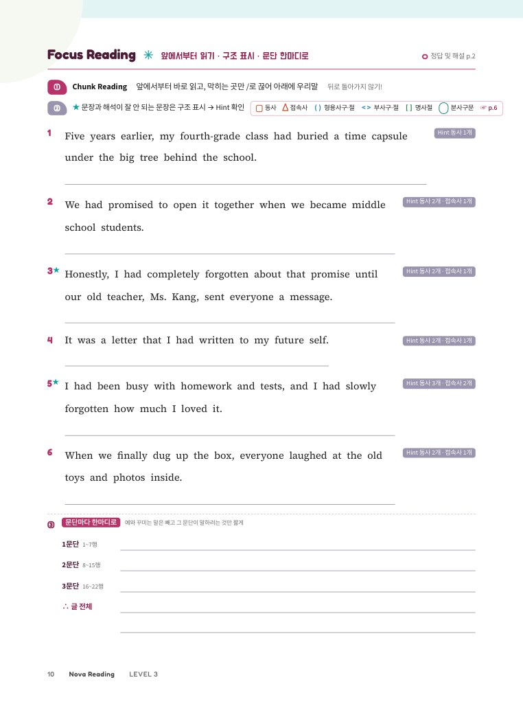
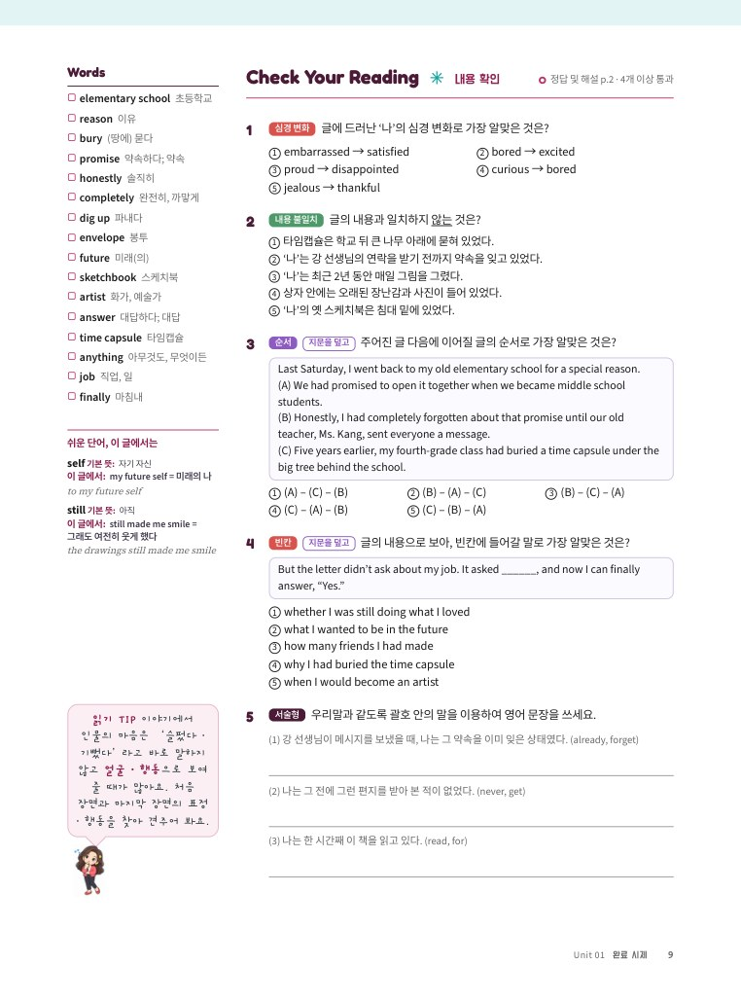

영어 독해 · 긴 글 구문부터 모의고사 유형까지
NovaReading
LEVEL3
긴 글도 앞에서부터, 문단마다 한마디로
지문 36편 · 모의고사 유형구조 표시 · 문단 한마디로Mini TEST 2회 · Word Check본책 + 워크북 + 상세 해설
Read further!긴 글도 앞에서부터
NOVA ENGLISH본책 · 워크북 · 정답 및 해설
긴 글을
한마디로 잡는 힘
단어 먼저 → 처음 읽기 → 문제 → Focus Reading → 다시 읽기.
막히는 곳만 끊어 앞에서부터 읽고,
문단마다 한마디로 정리하며 긴 글의 구조를 잡아요.
1지문 36편, 200단어 안팎
이야기 · 설명문 · 실용문(연표 · 공모전 · 연설문 · 회의록 · 캠페인 …)을 Unit마다 하나씩. Nova Grammar LEVEL 3의 같은 Chapter 문법이 지문에 나와요.
2Focus Reading · 문단 한마디로
핵심 문장 6개를 막히는 곳만 끊어 바로 읽고, ★ 문장은 □ △ ( ) < > [ ] ○로 구조를 확인한 뒤 문단마다 한마디로 정리해요.
3모의고사 유형 · Mini TEST
대의 문항은 영어 선택지로, 빈칸 · 순서 · 삽입 · 요약까지 지문마다 5문항. 책 끝에는 고1 3월 모의고사 형식 실전 테스트 2회.
4워크북 · 상세 해설
학교 시험처럼 바꾼 내신 Test, 흐름 지도와 선택지별 풀이까지.
미리 보기

지문
Focus Reading
Check Your Reading Mini TEST
Mini TEST구성본책 187쪽워크북 24쪽정답 및 해설 117쪽클래스카드 세트
Nova Reading LEVEL 3Nova Grammar LEVEL 3와 짝